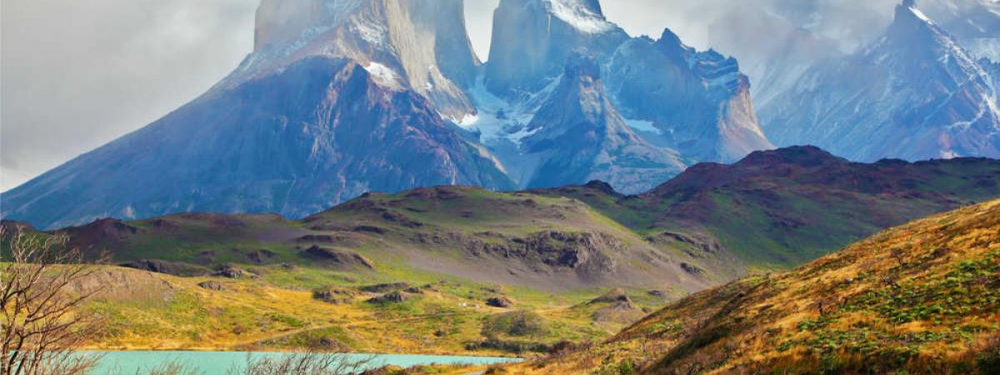

LAGO LLANQUIHUE (CHILE)
Parque Arqueológico Sacsayhuaman
Con una extensión de 877 kilómetros cuadrados, el Lago Llanquihue es el recurso hidrográfico más grande del país después del Lago General Carrera. Su vegetación siempreverde de olivillos, lengas, alerces, coigües, arbustos y helechos, son uno de sus principales atractivos, además de sus hermosas aguas aptas para la práctica de deportes náuticos. La fauna es también característica y cuenta con zorros, güiñas, chingues, cernícalos y torcazas. Si visita el Lago Llanquihue, también podrá disfrutar de las bellezas arquitectónicas de la zona, sobre todo de la arquitectura de rasgo alemán en Puerto Varas, Puerto Octay y Frutillar y también de playas y campos dedicados al cultivo agrícola.